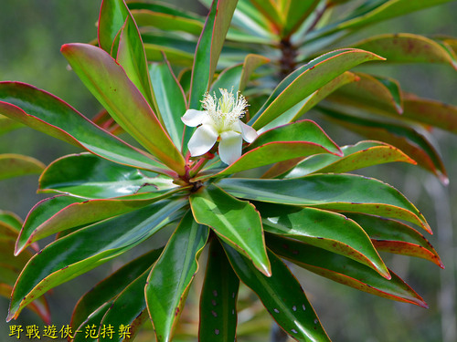

Bonnetiaceae
Bonnetiaceae is a small family of about 35-40 species in 3 genera (Archytaea, Bonnetia, Ploiarium) consisting of evergreen shrubs and trees. They typically have leathery, alternate leaves, large showy flowers with numerous stamens, and capsule fruits. The family has a notable disjunct distribution, occurring in the Neotropics (especially the Guiana Highlands) and Southeast Asia. Bonnetiaceae belongs to the order Malpighiales and is closely related to Clusiaceae and Hypericaceae.
Overview
Bonnetiaceae comprises evergreen shrubs and trees adapted to specific tropical environments. The genus Bonnetia is characteristic of the unique, nutrient-poor, high-altitude tepui ecosystems of the Guiana Highlands in South America, while Ploiarium is found in heath forests (kerangas) and peat swamps of Malesia (Southeast Asia). Archytaea also occurs in the Guiana Highlands region. This fragmented distribution across continents points to an ancient origin and complex biogeographic history.
Plants in this family often feature attractive, large flowers with numerous stamens and typically 5 conspicuous petals that are twisted or overlapping (convolute) in bud. The fruit is usually a dry capsule that splits open along the partitions (septicidal). Phylogenetically, Bonnetiaceae is placed in the large order Malpighiales, forming part of the "clusioid clade," indicating close evolutionary relationships with families like Clusiaceae (mangosteen family) and Hypericaceae (St. John's Wort family).
The family has little direct economic importance, but its members are ecologically significant components of their specialized habitats and are of considerable interest for studies in biogeography and plant evolution.
Quick Facts
- Scientific Name: Bonnetiaceae
- Common Name: (None widely used)
- Number of Genera: 3 (Archytaea, Bonnetia, Ploiarium)
- Number of Species: Approximately 35-40
- Distribution: Disjunct: Neotropics (esp. Guiana Highlands, Cuba) and SE Asia (Malesia).
- Evolutionary Group: Eudicots - Rosids - Fabids - Malpighiales
Key Characteristics
Growth Form and Habit
Evergreen shrubs or trees. Some species may produce resinous exudates, though typically less prominent than in Clusiaceae.
Leaves
Leaves are simple, arranged alternately, and often clustered towards the branch tips, sometimes forming rosette-like structures. They are typically leathery (coriaceous), with margins that are usually entire or finely toothed/crenated. Venation is often prominent, sometimes with many parallel lateral veins reaching the margin. Stipules are absent.
Flowers
Flowers are usually large, showy, bisexual, and radially symmetrical (actinomorphic). They can be solitary or arranged in terminal or axillary clusters (cymes or panicles).
- Sepals: 5, separate or slightly fused at the base, often unequal in size, and typically persistent in fruit.
- Petals: 5, separate, usually large and conspicuous (white, pink, or red). Characteristically convolute (twisted or overlapping like a pinwheel) in bud before opening.
- Stamens: Distinctively numerous (many, >15 to hundreds). Filaments may be free or grouped into 5 bundles (fascicles) that often alternate with the petals, or sometimes fused into a short tube at the base. Anthers are usually small and open via longitudinal slits.
- Ovary: Superior, composed of 3-5 fused carpels forming 3-5 locules (chambers). Placentation is axile, with usually numerous ovules per locule (sometimes only a few). A single style is present, ending in a simple or 3-5 lobed/branched stigma.
Fruits and Seeds
The fruit is typically a dry, woody or leathery capsule that dehisces (splits open) primarily along the septa between the locules (septicidal dehiscence), usually into 3-5 valves. A persistent central column often remains after the valves open. Seeds are usually numerous, small, and sometimes flattened or winged.
Chemical Characteristics
Plants in this family often contain chemical compounds similar to those in related families like Clusiaceae, including xanthones, tannins, and various terpenoids. Some species may produce minor amounts of resinous substances.
Field Identification
Identifying Bonnetiaceae requires recognizing its woody habit, distinctive leaves, showy flowers with numerous stamens, and characteristic capsule fruit, combined with its specific geographic distribution:
Primary Identification Features
- Habit: Evergreen shrub or tree.
- Location: Found only in specific tropical regions: Guiana Highlands/Cuba (Neotropics) or Southeast Asia (Malesia).
- Leaves: Alternate, simple, leathery, often clustered near branch tips.
- Flowers: Large, radially symmetric, with 5 large, separate petals that are convolute (twisted) in bud. Possess numerous stamens.
- Fruit: A dry capsule that typically splits along the partitions (septicidally) into 3-5 valves.
Secondary Identification Features
- Sepals: 5, often unequal and persistent.
- Stamens: Free or grouped into 5 bundles (fascicles).
- Ovary: Superior, with 3-5 locules and numerous ovules.
- Habitat: Often found in nutrient-poor, wet environments like high-altitude tepuis (Guiana Highlands) or heath forests/peat swamps (Malesia).
Seasonal Identification Tips
- Year-round: Evergreen leaves and woody habit are always present. Clustered leaf arrangement can be distinctive.
- Flowering: The large, showy flowers (often white, pink, or red) are key identifiers when present during the flowering season. Note the convolute petals in bud.
- Fruiting: The distinctive septicidal capsules, often woody and sometimes retaining the persistent sepals and central column, are helpful for identification after flowering.
Common Confusion Points
- Clusiaceae/Guttiferae: Closely related, but often distinguished by having opposite leaves (vs. alternate in Bonnetiaceae) and frequently producing more copious yellow or white latex. Fruit types in Clusiaceae are more varied (berries, drupes, capsules).
- Hypericaceae: Also related, but predominantly herbs or smaller shrubs (less often trees), usually with opposite leaves often bearing translucent dots, typically yellow flowers, and stamens clearly grouped in distinct bundles.
- Calophyllaceae: Another related family, typically trees/shrubs often with latex and opposite leaves. Flowers are similar with numerous stamens, but the fruit is usually a drupe.
- Theaceae (Tea Family): May have similar showy flowers with numerous stamens, but typically have different leaf arrangements/margins, different ovary structure, and fruit types (often capsules opening differently or sometimes indehiscent). Belongs to a different order (Ericales).
The combination of alternate, simple, leathery leaves, large flowers with 5 convolute petals, numerous stamens (free or fascicled), superior multi-locular ovary, and septicidal capsule fruit is characteristic of Bonnetiaceae within its specific geographic range and habitat.
Field Guide Quick Reference
Look For:
- Evergreen shrub/tree
- Found in Guiana Highlands/Cuba or SE Asia
- Alternate, simple, leathery leaves (often clustered)
- Large flowers, 5 petals, convolute in bud
- Numerous stamens (free or 5 bundles)
- Superior ovary, 3-5 locules
- Septicidal capsule fruit
Key Variations:
- Stamen arrangement (free vs. fascicled)
- Flower color (white, pink, red)
- Leaf shape and venation details
- Habitat (tepui vs. heath forest)
Notable Examples
The family's genera are characteristic of specific tropical ecosystems.

Bonnetia roraimae
(No common name)
A characteristic shrub or small tree found on the summits of tepuis (table-top mountains) in the Guiana Highlands of Venezuela and surrounding areas. It features stiff, leathery, clustered leaves and large, showy pink or reddish flowers with numerous stamens, adapted to the harsh, nutrient-poor conditions of the tepui environment.

Ploiarium alternifolium
Arching Ploiarium
A shrub or small tree found in the heath forests (kerangas) and peat swamp forests of Malesia (Sumatra, Borneo, Malay Peninsula). It has alternate, leathery leaves often reddish beneath, and bears attractive pink or white flowers with 5 convolute petals and numerous stamens. It is ecologically important in these nutrient-poor ecosystems.

Archytaea triflora
(No common name)
A shrub found in the Guiana Shield region of South America, often in savannas or forest margins on sandy soils. It shares the family characteristics of alternate leaves and showy flowers with numerous stamens (often grouped in fascicles) and capsule fruits.
Phylogeny and Classification
Bonnetiaceae belongs to the large and diverse order Malpighiales, situated within the Fabid (eurosid I) clade of Rosids. Molecular phylogenetic studies place it firmly within the "clusioid clade," a group characterized by shared chemical compounds (like xanthones) and often features like resin canals and numerous stamens.
Within this clade, Bonnetiaceae is closely related to families such as Clusiaceae (Mangosteen family), Hypericaceae (St. John's Wort family), Calophyllaceae, and Podostemaceae (Riverweed family). Its exact position relative to these families can vary slightly between studies, but the close relationship is well-supported. The family's striking disjunct distribution between the Neotropics and Southeast Asia is a significant biogeographic pattern, likely reflecting ancient Gondwanan origins followed by vicariance or long-distance dispersal.
Position in Plant Phylogeny
- Kingdom: Plantae
- Clade: Angiosperms (Flowering plants)
- Clade: Eudicots
- Clade: Rosids
- Clade: Fabids
- Order: Malpighiales
- Family: Bonnetiaceae
Evolutionary Significance
Bonnetiaceae is important for understanding:
- Relationships within Malpighiales: Helps clarify the evolutionary connections within the large and complex Malpighiales order, especially the clusioid clade.
- Adaptation to Specific Environments: Represents successful adaptation to nutrient-poor, often waterlogged or high-altitude tropical environments (tepuis, heath forests).
- Biogeography: The Neotropical-Malesian disjunction is a classic biogeographic pattern, providing insights into historical continental connections, dispersal mechanisms, and extinction events.
- Floral Evolution: Exhibits characteristics like numerous stamens (sometimes fascicled) and convolute petals found in related families, useful for studying floral development and evolution in the Malpighiales.